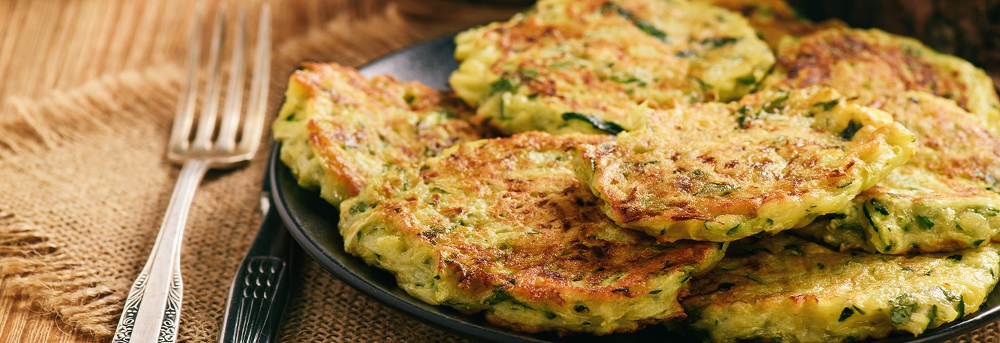
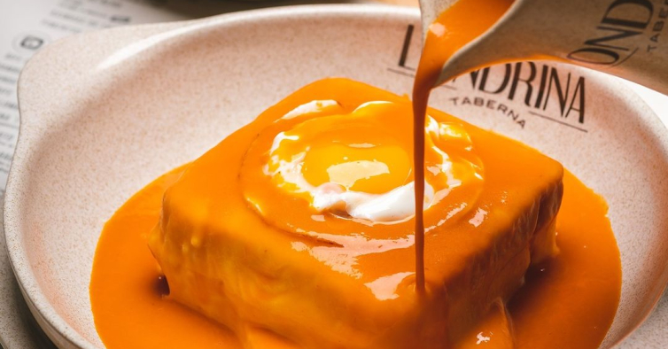

<ion-header [translucent]="true">
  <ion-toolbar>
     <ion-buttons slot="start">
        <ion-back-button default-href="#" text="Voltar"></ion-back-button>
      </ion-buttons>
    <ion-title>Conquistas</ion-title>
  </ion-toolbar>
</ion-header>

<ion-content [fullscreen]="true">

  <!-- Gastronomia -->
      <ion-header>
        <ion-toolbar>
          <ion-title>Gastronomia</ion-title>
        </ion-toolbar>
      </ion-header>

      <div style="display: flex; overflow-x: auto; padding: 6px; scrollbar-width: none;-ms-overflow-style: none; ::-webkit-scrollbar { display: none; }">

        <ion-card style="min-width: 160px; width: 160px; overflow: hidden; flex-shrink: 0;">
            

          <ion-card-header>
            <ion-card-title style="font-size: 14px;">Arroz de Sarrabulho</ion-card-title>
            <ion-card-subtitle style="font-size: 12px;">Almoço & Jantar</ion-card-subtitle>
          </ion-card-header>
        </ion-card>

        <ion-card style="min-width: 160px; width: 160px; overflow: hidden; flex-shrink: 0;">
            

          <ion-card-header>
            <ion-card-title style="font-size: 14px;">Pataniscas</ion-card-title>
            <ion-card-subtitle style="font-size: 12px;">Petisco</ion-card-subtitle>
          </ion-card-header>
        </ion-card>

        <ion-card style="min-width: 160px; width: 160px; overflow: hidden; flex-shrink: 0;">
            

          <ion-card-header>
            <ion-card-title style="font-size: 14px;">Francesinha</ion-card-title>
            <ion-card-subtitle style="font-size: 12px;">Almoço & Jantar</ion-card-subtitle>
          </ion-card-header>
        </ion-card>
      </div>
      <!-- Fim Gastronomia -->
</ion-content>
